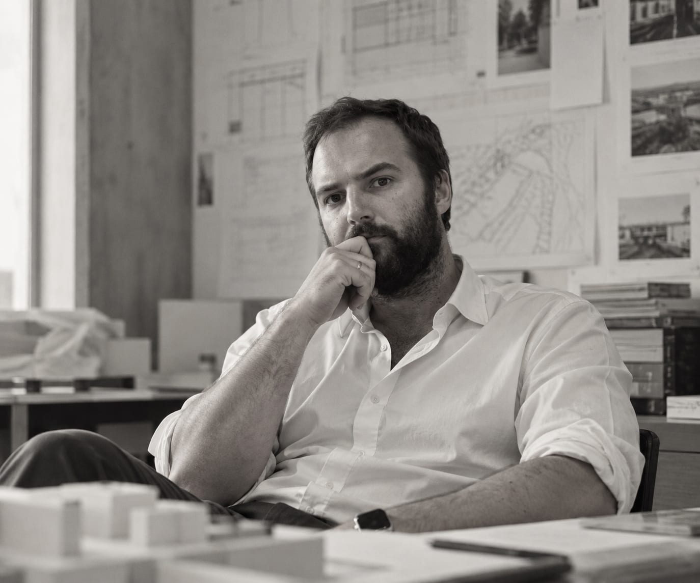

Soy un arquitecto y director de proyecto orientado al diseño, con base en Madrid, y trabajo en la intersección entre la arquitectura, la dirección de proyecto y el real estate. Mi enfoque está en proyectos residenciales de alta gama y hoteleros, liderándolos desde el concepto inicial hasta el desarrollo técnico, el procurement y la construcción. Me interesa especialmente el punto en el que la intención de diseño, la lógica comercial y la ejecución deben alinearse.
Mi trayectoria comenzó en Buenos Aires, con experiencia práctica de diseño y obra en proyectos residenciales. Al trasladarme a Europa, trabajé en proyectos de reforma y hotelería en Madrid y Londres, seguido de varios años de coordinación BIM y documentación de obra para proyectos cívicos y educativos en Estados Unidos. Desde 2024 vivo en Madrid, liderando el diseño y la ejecución de proyectos residenciales de alta gama del lado de la propiedad.
Además de mi trabajo profesional, desarrollo encargos y colaboraciones independientes en diseño residencial, hotelería y real estate. Estos proyectos me permiten explorar la arquitectura no solo como disciplina formal, sino como una herramienta para decisiones más claras, relatos más sólidos y valor a largo plazo. Más recientemente, también he empezado a incorporar la inteligencia artificial en parte de mi proceso —para gestión de proyectos, modelado 3D y documentación— como otra herramienta para trabajar más rápido sin perder precisión.
Documentación técnica seleccionada disponible previa solicitud.
Experiencia Seleccionada
- Arquitecto Líder / Director de ProyectoEFC Holdings, Madrid, ago. 2024–Presente
- Arquitecto BIMCordogan Clark & Associates, dic. 2022–ago. 2024
- ArquitectoBeriot+Bernardini Arquitectos, Madrid, sep. 2021–dic. 2022
- ArquitectoID Construcciones, Buenos Aires, ago. 2018–dic. 2022 (incluye colaboración selectiva tras el traslado a Europa)
- Experiencia anteriorAgencia de Protección Ambiental, Buenos Aires, may. 2017–jul. 2018 / CYSE SA, Buenos Aires, mar. 2013–abr. 2017
Formación
- Universidad Tecnológica NacionalDirección de Proyectos, 2020
- École Nationale Supérieure d'Architecture Paris-MalaquaisIntercambio académico
- Universidad de Buenos AiresArquitectura, FADU, 2016
Título de arquitecto reconocido oficialmente en España para el ejercicio profesional al nivel habilitante correspondiente.
Idiomas
- EspañolNativo
- InglésFluido
- FrancésB2
- ItalianoA2
Áreas de Enfoque
- Residencial de alta gama
- Hotelería
- Estrategia de producto inmobiliario
- Reforma y reutilización adaptativa
- Dirección arquitectónica
- Flujos de trabajo con IA